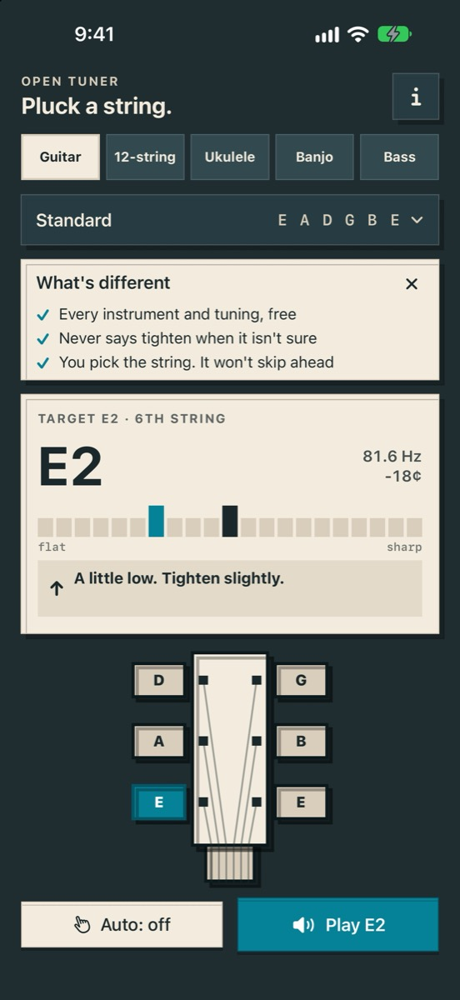
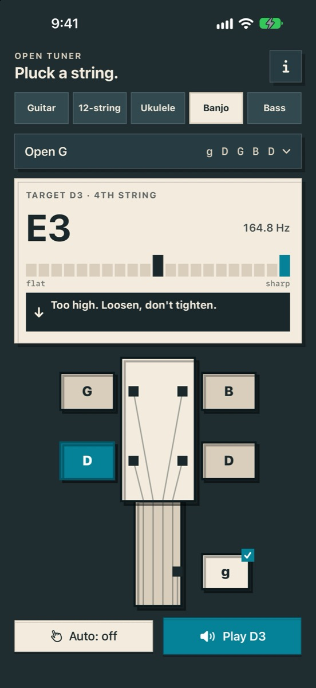
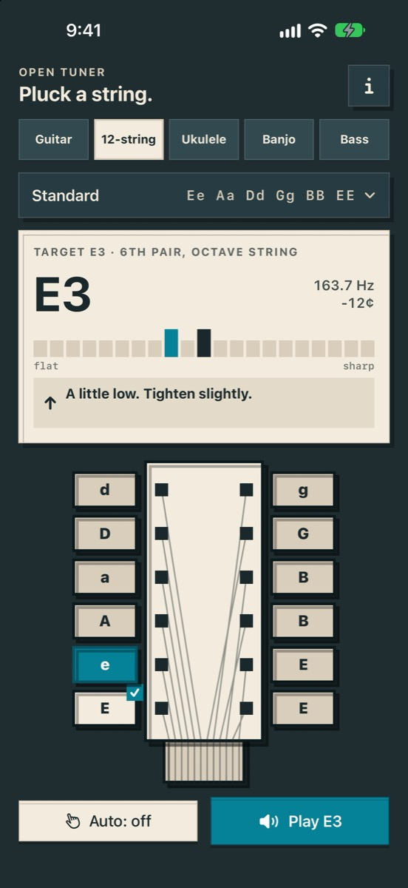

“it broke one of my strings becuase it kept telling me to tune up”
What Open Tuner does instead
Shows the note it hears, says loosen when you're sharp, and never says tighten when it isn't sure.
Open AppCo app #10
Guitar, 12-string, uke, banjo and bass. 28 tunings, all included.
Apple is reviewing version 1.0.0 (build 1).
The actual app



28-second device check
On a real iPhone, with sound: launch from the Home Screen, play E2, read the low E string live, hold Play to repeat the note, switch strings, then the 12-string and bass.
Why this app exists
We read 16,437 App Store reviews of 18 tuner apps. These complaints kept coming up.
“it broke one of my strings becuase it kept telling me to tune up”
Shows the note it hears, says loosen when you're sharp, and never says tighten when it isn't sure.
“any alternative like drop D or half step down will require a subscription”
All 28 tunings across five instruments are included.
“Now there are 11 stupid questions before you can even use it.”
Guitar Tuner - Simply Tune on the App Store
Opens straight to the tuner.
“pop-up ads that cover the whole screen each time you open the app”
No ads.
“automatically moves to the next one. You’re constantly selecting the string you want”
Guitar Tuner - Simply Tune on the App Store
You pick the string. Auto never moves on by itself.
“this app has no option for 12-string guitars”
12-string, each pair tuned one string at a time.